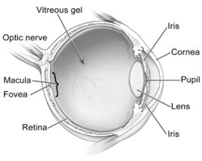
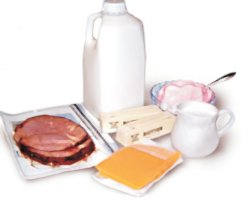
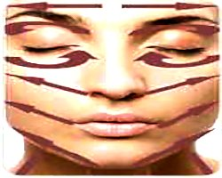
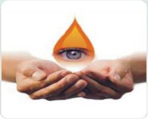

It is June and with impending rains, there is hope in the air. And we at Ayushman are all geared up to send you the latest issue of AyushPatrika. Continuing our series on the Human body, in our main topic—we get to know how to take care of our eyes. We overwork our eyes and give them little rest. Watching television for long hours, working on computers day and night and lack of sleep puts a strain on our eyes. Hence they need some extra care and attention.
We therefore have for you in this issue—
EYES–THE WINDOWS OF THE SOUL
A STORY WITH A MORAL
MEDICAL JOKE AND CARTOON
1. EYES–THE WINDOWS OF THE SOUL
Eyes are one of the most sensitive organs of our body. Besides providing us sight, they also aid in maintaining balance and equilibrium. Bright, alert and clear eyes tell us that all
is well with the body and mind.
On the other hand dull, droopy, dry, smudgy, or blood- shot eyes tell us a story of disease. Any change in the eyes including visual defects (sudden or gradual), discoloration, floating spots etc. should be immediately brought to the notice of your doctor.
Human eye is like a camera where the light filters in through the cornea, and lens and forms an inverted image on the retina. Light enters through the pupil, which adjusts in size according to its brightness in sunlight, pupil is almost like a pinpoint and at night it is dilated (becomes big). After passing through cornea, lens, and inverted imprinting on retina, the image is carried by the optic nerve to the brain and a final “print’ is made after straightening it. This is visualized by us as a picture. Actually when it strikes the retina, a chemical.

Process triggers off a tiny wave of electricity. This current now stimulates the optic nerve behind the retina, which swiftly carries the message to the ‘optic center’ in the brain. The brain interprets the image as say a snake and orders – ‘withdraw!’ All this takes 1/200th of a second.
Eyes rest by working in tandem – while one eye rests by working only 10% of its capacity, the other eye carries the burden by working 90%. They keep doing this in turns. We only have two eyes, and overworking them can lead to complications. In contrast, a butterfly has 12000 eyes, so each of its eyes must be getting plenty of rest!
Our eyes were not designed for so much near work. Stone Age man needed mainly distant vision to hunt his food. But as mankind evolved, he had to do more of ‘near vision’ work. Eyes have not evolved enough to cope with this load, leading to problems like myopia (short sightedness) and hypermetropia (long sightedness). With most of us working at computers these problems are only going to multiply! This is also why we see so many youngsters wearing glasses.
SOME COMMON EYE PROBLEMS
Redness
Redness can be due to various causes and sometimes due to tiredness, when it will pass off by itself. But it may be due to infection or bleeding in eye so see your doctor if it persists.
Itching, pain
Itching can be due to a generalised allergy, and pain may be due to infection or glaucoma (a condition where there is rise in pressure inside the eyes). See your doctor if either persists.
Foreign body
A little dirt or a tiny object entering the eye is common. If this happens, do not rub your eyes; it may cause it to further stick inside. Blink several times to start your tears flowing; this will help flush out the dirt. Boil water till it bubbles for more than ten minutes, and then cool it. Now take an eye dropper and use the water to flush the eye till the dirt gets dislodged. Remember not to touch the eye with the dropper directly. If the dirt remains inside, see your doctor.
Eyestrain
Eyestrain causes a dull, aching sensation around and behind the eyes that can progress into a generalized headache. Eyestrain is commonly a result of overuse of the eyes for activities requiring close and precise focus, such as reading, sewing or using the computer. Lie down, close your eyes, place a cold compress (cold, clean, wash cloth is fine) over your eyes. Relax your eyes for at least ten minutes. Try to avoid eyestrain by taking periodic “focus breaks”.
Puffy eyes
Puffy eyes refer to the swelling of tissues around your eyes. Puffy eyes can result from various reasons including heredity, fluid retention due to weather or hormone levels, allergies, certain medications, staying up at night, etc. If puffiness does not go away or you notice swelling in other parts of the body, see your doctor to rule out other possible causes of swelling such as kidney, heart or thyroid problems.
Dry eyes
Dry eyes occur when there is decreased production of fluids from your tear glands. You may experience pain, itching, redness, sensitivity to light, tear and blurry vision often after prolonged work. This can be due to dry air created by air conditioning, heat, menopause, and long hours in front of the computer without blinking. Treatment is necessary if you have prolonged signs and symptoms of dry eyes. Simple steps to prevent dry eyes would be to avoid windy conditions by wearing sunglasses and blink a lot.
CARING FOR EYES
Eat Right
In addition to getting regular eye checks, eating certain types of food can enhance and preserve the health of your eyes.
Let us throw some light on eye-healthy foods -

Food sources for EYE nutrition
Vitamin A : - Red – orange fruits like carrots, pumpkin, oranges and green leafy, vegetables like spinach.
Vitamin C : - Citrus fruits like oranges, sweet lime etc., guava, amla.
Vitamin E : - Wheat germ, peanuts, eggs, corn oil and all green leafy vegetables.
Zinc : - Yogurt,meat, whole grains and beans,lentils, green leafy vegetables.
Selenium : - Nuts, Meat, Broccoli, brown rice, cabbage, eggs, garlic, wheat germ and whole grain cereals.
Omega-3 fatty acids : - Fish, including salmon and all types of fish oil, flax seeds, walnuts, beans (esp. soya), algae, all edible seeds.
Relaxation and massage for the eyes

One can start putting mild pressure on the eyes starting from the center of the eyebrows to both corners of the eyes and the lower part of the eyes with the help of the fingertips. After this, with the help of two first fingers of the hands, put slight pressure on the
center of the closed eyelids and rotate the eyes. It soothes the muscles and
relaxes them from stress. This light massage can be done while working on the
computer or while reading something to de-stress the eyes.u
Exercises
Simple eye exercises can be performed every day for a few minutes to keep the eyes bright and healthy Exercise your eyes every 20 minutes or so when you take a break from your work
First, blink your eyes several times. While you keep your eyes closed, roll your eyeballs both
Clockwise and anticlockwise, and then swing them from side to side. During breaks, splash water on your face while keeping your eyes closed. This has an overall relaxing effect and helps you feel refreshed.
‘Palming’ is a very relaxing exercise for tired eyes. Here the interlaced fingers of the hands are used to cover the open eyes such that no light can enter, and then an
attempt is made to visualize total blackness. When that happens, the eyes automatically feel rested. Other useful exercises are ‘swinging’ the eyes from side to side, alternate distance and near fixation, and reading Snellen’s chart (the chart used by eye doctors) with one eye at a time, the chart being fixed at six meters distance.
Sleep right
Enough sleep (about 8 hours) will ensure that your eyes get rested.
Protect your eyes
Wear proper sunglasses when outdoors and include ultraviolet radiation protection in all eye wear.
Eye care while working on a Computer
Computer users tend to complain of eye strain more than non-users. Wrong sitting position, insufficient lighting or defective screens could lead to fatigue. Hence it is recommended that you should have correct seating with enough backrest and sufficient lighting near the workstation but just enough to avoid the glare. You should also take frequent breaks while you are focused on the screen. Sit with enough backrest and sufficient lighting near the workstation but just enough to avoid the glare. You should also take frequent breaks while you are focused on the screen. U.V. filter glasses, protect the eyes from the harmful rays emanating from computers, & recently there has been a study where quartz has been reported to absorb these rays.
Care for contact lenses and glasses
Lens users should not wear them for more than 10-12 hours a day. Hygiene must be maintained on priority by rinsing the lens at every use with fresh solution, and handling the lens only after washing the hands thoroughly.
Many of us wear glasses these days but few know its care. You must always keep your eyeglasses in a hard case when you’re not wearing them. Also clean the lenses, even if they’re scratch resistant, with a lens cleaner and soft cloth. Never wipe them with any available cloth (even a tee-shirt), and never wipe them without wetting them first. And don’t use a facial tissue or paper towel, no matter how soft it might feel.
Other measures
Walking empty feet on green grass early morning in an environment surrounded by greenery helps to soothe the eyes and improve eyesight.
Cotton balls soaked in chilled cucumber juice, if kept on the eyes for 10-15 minutes help eyes relax and reduces the dark circles around the eyes.
Eye Donation

In many young people, due to infection, the outermost layer of eyes called cornea becomes opaque and the person cannot see. Eye donation is the simple way you can help after you pass away. You need to understand that the whole eyeball is not removed, and any eye doctor can be called who will remove only the superficial outer layer. It should be done within six to eight hours of death. Eyes should be immediately closed after the patient dies and if possible, antibiotic drops instilled, to make sure the eyes remain infection-free & moist for donation. If you pledge your eyes, after your death, two people may get restoration of vision.
So please gift your precious eyes to people and enable them to see the world through your eyes.
2. A STORY WITH A MORAL
Once there was a farmer who discovered that he had lost his watch in the barn. After searching high and low in the hay stacked there for a long while, he gave up and enlisted the help of a group of children playing outside the bar, promising a reward. Hearing this, the children hurried inside the barn, went through the entire stack of hay in a great rush tossing it all over, but could not find the watch. They gave up after sometime.
Only one boy remained outside sitting quietly. After the boys rushed out, this boy asked for permission to search for the watch and the farmer said yes. The boy got up and went and sat inside the barn. After some time the farmer asked him to do some searching and not just sit there quietly. The boy put a finger on his lips and signaled with his hand for the farmer to be quiet. Soon he got up and went to one section of the stack, gently parted the hay and easily found the watch.
The farmer was both happy and surprised. He asked the boy how he succeeded where the rest had failed.
The boy replied, “I did nothing but sit on the ground and listen. In the silence, I heard the ticking of the watch and just looked for it in that direction.”
Moral: A peaceful mind can think well than a mind that is worked up!!!
3. MEDICAL JOKE AND CARTOON
An eye for an eye!
Our professor of surgery was examining a person’s behind with an instrument called proctoscope, when he got the scare of his life at being stared right back. (The patient had come to the hospital complaining of rectal pain.) The professor almost dropped the instrument and jumped back! The mystery was solved on questioning the patient, when it was revealed that he had accidentally swallowed his false eye a month back and forgotten about the episode. He had got a new one fixed and thought the old one must have passed out. But it had slowly moved down and just on the day the professor was examining him it had lodged at the outlet to stare back at the befuddled surgeon!
Hope you found this issue useful and interesting. We welcome your feedback and suggestions for future interactions. We would also like to encourage those of you diagnosed with specific problems to revert back to us with the current status of your problem by E-mail or meet me personally if necessary. I will try my best to address your problems. Before signing off, we at Ayushman wish you a healthy month—Ayushman bhava!
Dr.Geeta Sundar MD Chief Health Counsel, India online Health